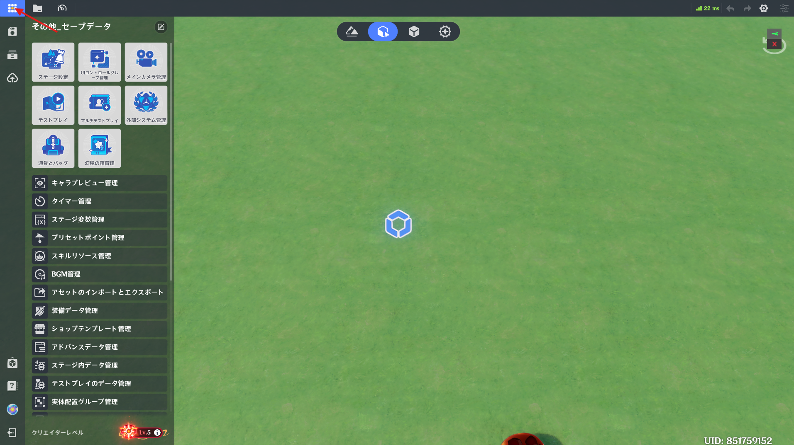
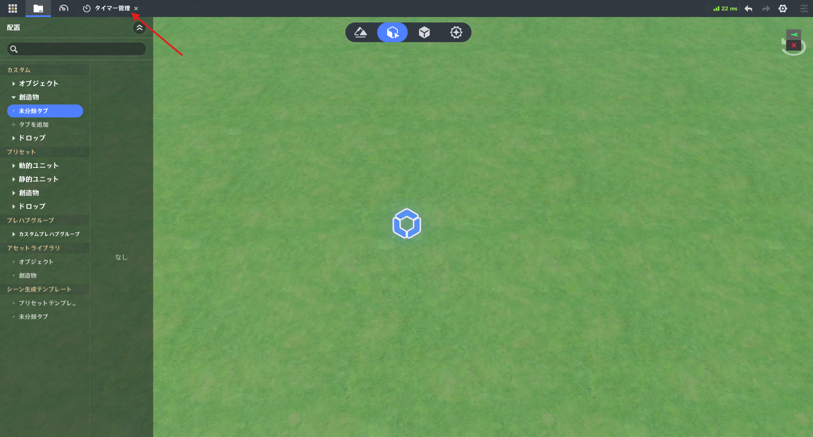
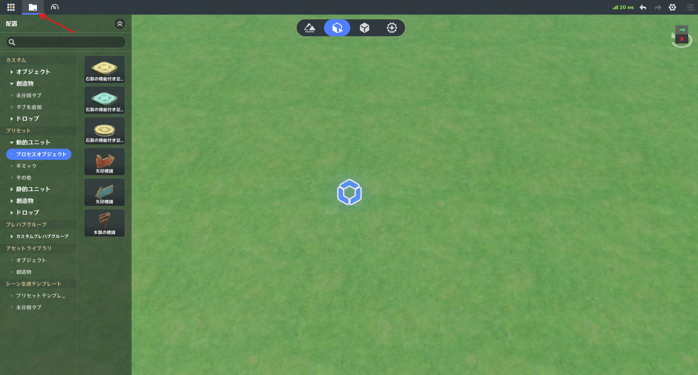
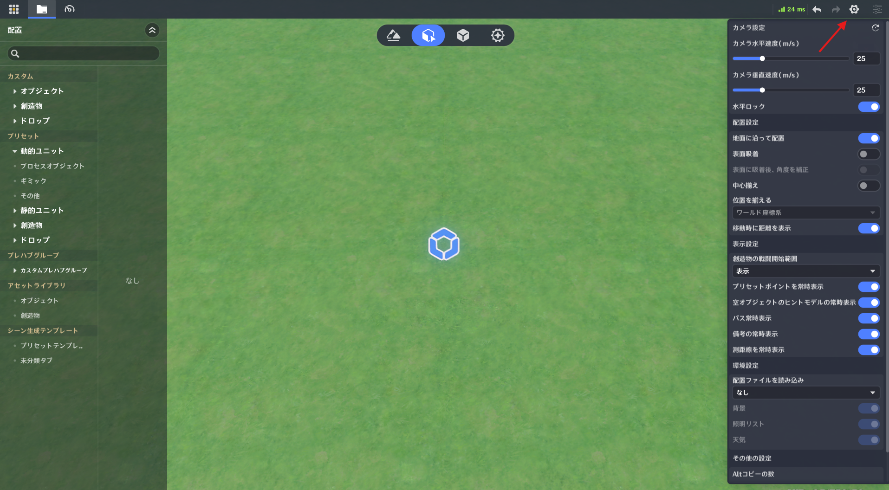
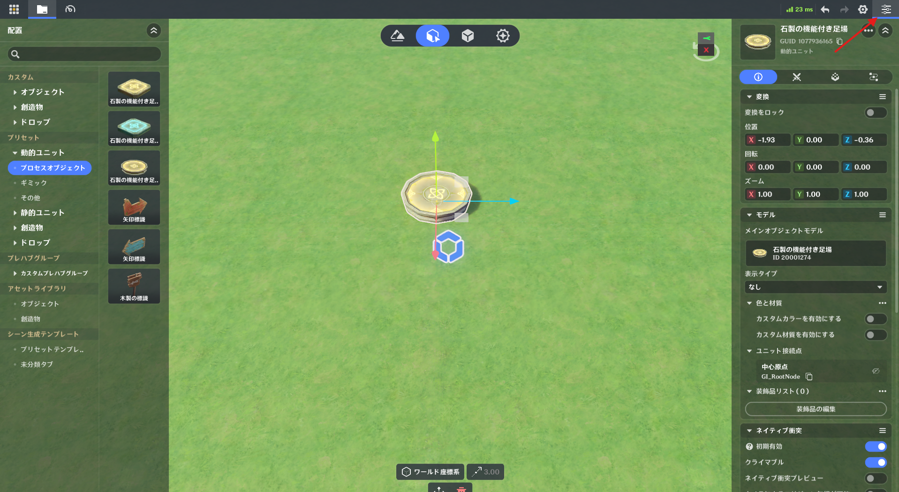
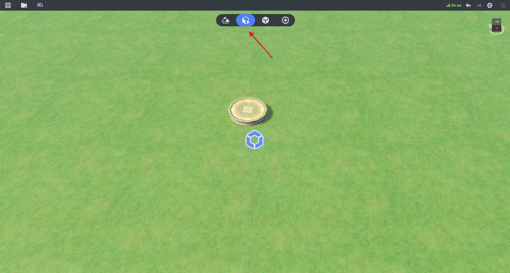

⭐1.システムメニュー

左上のメニューアイコンをクリックするとシステムメニューを開閉できます。
Escキーでも切り替え可能です。
🌸1.システムメニュー機能
システムメニューでは以下の機能を利用できます。
現在の進行状況を保存、セーブデータ一覧を開く、ステージをアップロード、星々の箱庭を開く、セーブデータを閉じる
ステージ設定、UIコントロールグループ管理、メインカメラ管理、テストプレイ、マルチプレイテスト、外部システム管理、通過とバッグ、幻境の箱管理
キャラクタープレビュー管理、タイマー管理、ステージ変数管理、
プリセットポイント管理、スキルリソース管理、BGM管理、
アセットのインポート／エクスポート、装備データ管理、
ショップテンプレート管理、アドバンスデータ管理、ステージ内データ管理、
テストプレイのデータ管理、実体配置グループ管理、
ユニットタグ管理、シールド管理、スキャンタグ管理、パス管理、
多言語テキスト管理、光源管理、ボイスとテキストチャット管理、
ショートカットキー一覧、シーン生成テンプレート管理、スキル変数管理、リスクチェック、幻境任務
クリエイターレベルの確認、クリエイター権限の確認
🌸2.最小化

システムメニューから開いた画面は上部バーへ折りたたまれます。
対応する機能をクリックすると再度開けます。
⭐2.アセットバー

左上のアセットバーアイコンで表示・非表示を切り替えられます。
編集モードによって内容が変化し、通常は「カスタム」と「プリセット」が含まれます。
プリセット項目は直接編集できないため、カスタムとして保存してから編集します。
主な機能
検索：現在のタブ内を検索
未分類タブ：初期状態のタブ
カスタムタブ管理：新規タブ作成、タブ名変更、タブをピン留め、タブを削除
⭐3.クイック設定

右上の設定アイコンから開けます。
設定項目
カメラ設定:カメラ水平速度(m/s)、カメラ垂直速度(m/s)
水平ロック:有効時、カメラは地面と平行に移動
配置設定:配置したオブジェクトを地形へ密着配置、表面吸着（周囲のオブジェクトへスナップ）、表面に吸着後、角度を補正（吸着対象へ自動整列）、中心揃え（オブジェクト中心を自動整列）、位置を揃える、移動時に距離を表示
表示設定:創造物の戦闘開始範囲、プリセットポイントを常時表示、空オブジェクトのヒントモデルの常時表示、パス表示、備考の常時表示、測距線の常時表示
環境設定:配置ファイルを読み込み、背景、照明リスト、天気
その他の設定:Altコピーの数、ショートカットキー一覧
⭐4.詳細パネル

シーンまたはアセットバーでユニットを選択すると、右側に詳細パネルが表示されます。
シーン内選択時は右上の三本線のボタンで開閉可能
アセットバー選択時は、閉じた後に再選択すると再表示されます
⭐5.モード切替

上部ボタンから編集モードを切り替えます。
地形編集:地形作成、環境設定、オブジェクト配置、創造物配置、ドロップ配置
エンティティ配置:オブジェクト配置、創造物配置、ドロップ配置
プレハブライブラリ:オブジェクトプレハブ作成・編集、創造物プレハブ作成・編集、ドロッププレハブ作成・編集、プレハブグループ管理
戦闘プリセット:プレイヤーテンプレート編集、ジョブ編集、ユニット状態編集、スキル編集、ローカル投射物編集、アイテム編集、エフェクトツール
⭐6.カメラ操作
カメラの移動:WASDキー
カメラ上昇:Eキー
カメラ下降:Qキー
カメラの回転:右クリック
カメラの平行移動:中クリック
ズームイン/アウト:マウスホイール
カメラの水平ロックの有効化/無効化:Alt + Lキー